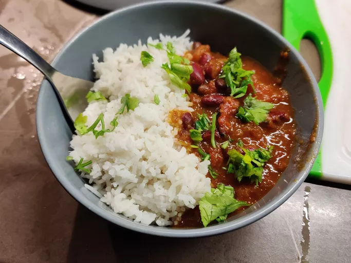

RAJMA

Description
Ingredients
- Kidney Beans
- Onion
- Garlic
- Ginger
- Vegetable Oil
- Ghee
- Tomato
- Spices
STEPS
- Place the kidney beans into a large container and cover with several inches of cool water; let stand 8 hours or overnight. Drain and rinse.
- Grind the onion, ginger, and garlic into a paste using a mortar and pestle.
- Heat the oil and ghee together in a pressure cooker over medium heat. Fry the red chile peppers, cumin seeds, and whole cloves in the hot oil until the cumin seeds begin to splutter; stir the onion paste into the mixture and cook, stirring frequently, until golden brown. Season with the ground turmeric, ground cumin, and ground coriander; continue cooking for a few more seconds before adding the tomatoes. Cook until the tomatoes are completely tender.
- Add the drained kidney beans to the pressure cooker with enough water to cover; pour the 2 cups water additionally to the cooker. Add the sugar and salt. Close the pressure cooker and bring to 15 pounds of pressure; cook about 40 minutes. Lower the heat to low and cook another 10 to 15 minutes. Release the pressure and open the cooker. Stir the garam masala and ground red pepper into the bean mixture; garnish with chopped cilantro to serve.